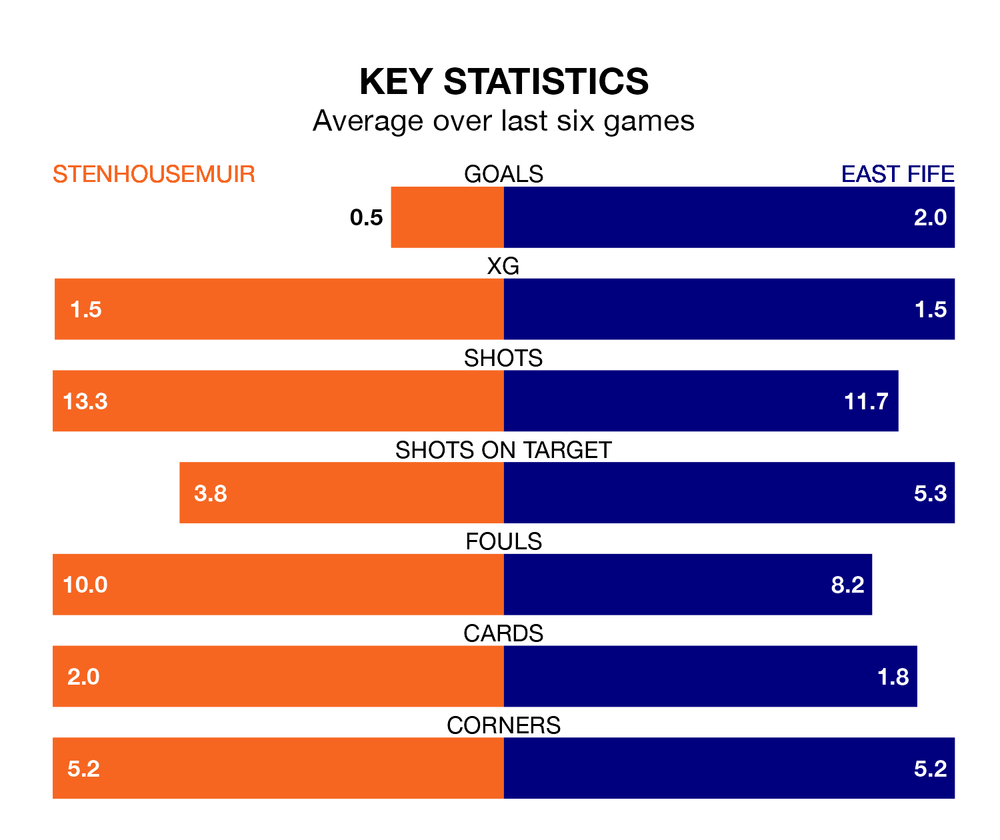

Two of League Two's meanest defences go head-to-head at Ochilview Park on Saturday, when Stenhousemuir host East Fife.
No teams have conceded fewer goals than Stenhousemuir to date: the home side have let in just 25 goals in 31 games.
The Fifers have conceded 38 goals in 31 games, giving them the joint-fourth tightest back line so far this season.
Key to the Warriors's home form has been Darren Jamieson, who has allowed 0.74 goals past him per 90 minutes, compared to 1.16 for Allan Fleming in the opposite net.
Stenhousemuir are top of the table after 31 games, of which they have won 18 and drawn 10, earning 64 points.
East Fife are four places behind the Warriors in fifth, with 11 wins and 10 draws putting them on 43 points.
In Matthew Aitken, the home side have one of the league's most on-form strikers so far this season. He has notched 14 goals in 31 appearances, to sit second in the scoring charts.
His goal rate of one every 181 minutes is slightly quicker than that of Nathan Austin, the Fifers's top scorer with a goal every 172 minutes, and a total of 13 goals in 28 games.
In the last 10 years, Stenhousemuir and East Fife have played each other on 18 occasions. Stenhousemuir won seven of them, East Fife six, and they drew five times.
On average, the Warriors scored 1.2 goals and the Fifers 1.2 in those matches.
Their last meeting was on February 10, when they played out a 1-1 draw.
Stenhousemuir are in mixed form in League Two, with one win and four draws from their last six games.
With four wins and two draws over that period, the visitors' form is much better – they have taken 14 points from 18, compared to Stenhousemuir's seven.
Stenhousemuir's last match was on Saturday, a 0-0 draw against Dumbarton.
East Fife beat Elgin City 2-0 last time out, also on Saturday, with Alan Trouten and James Lyon on the scoresheet.
Updated: 10:31 (UTC), 31/03/24